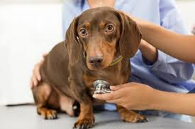

Consejos para cuidar bien de tus mascotas
Parásitos: Los gatos y perros deben tratarse contra parásitos internos cada 3 meses, y muy especialmente cuando son cachorros, y antes de vacunarse.
También existen parásitos externos, como pulgas y garrapatas que se erradican utilizando productos apropiados. Será mejor que lo consultes con el veterinario.
Así tendremos a nuestro amigo limpio por dentro y por fuera.

Vacunas: Lo primero que debes saber, es que si tu animal de compañía no está vacunado no puede entrar en contacto con otros animales ni con el exterior durante
los dos primeros meses de vida. El plan de vacunación variará en función de la raza, estado inmunológico y estilo de vida. Lo diseñará nuestro veterinario y podrás
comprobar lo beneficiosas que resultan para evitar enfermedades como parvovirosis, moquillo o hepatitis canina, en el caso de los perros, y otras como calicivirus,
panleucopenia, rinotraqueítis, en el caso de los gatos.
Esterilización: La esterilización es una práctica recomendada. En el caso de los machos, la castración disminuye las peleas con otros perros, las
fugas de casa, incluso tendencias como marcar con orina o montar. En el caso de las hembras te tranquilizará saber que la esterilización elimina el celo,
la posibilidad de pseudogestación, reduce la incidencia de tumores de mama, así como los maullidos y otras conductas propias del celo. Esta operación no provoca
cambios de humor en el animal y resulta ser muy común y sin riesgos.
¡A pasear se ha dicho! Disfruta de los paseos con tu perro, él los necesita para hacer ejercicio y socializar, así que unos tres paseos al día
estarán bien y mejor todavía si las alternas con largas caminatas por el campo. El gato, al contrario que el perro, puede pasar su vida en casa, pero eso si,
podrás generar un entorno divertido para que se lo pase pipa. Sé civilizado y recoge los excrementos de tu perro y si tienes gato recuerda limpiar su bandeja y
cambiar su arena periódicamente.
Entrenamiento: Para la mayoría de las mascotas establecer una rutina y patrones de comportamiento es fundamental y es por eso que debemos aprender
en cada caso cual es la forma correcta para enseñarles (y tener mucha paciencia).
Por ejemplo, hay mascotas que sufren viajando en un auto, para entrenarlas y evitar esa fobia se debe comenzar llevándolas en paseos cortos e ir aumentando el tiempo y la frecuencia poco a poco.
Otros aspectos importantes para tener en cuenta es el comportamiento hacia desconocidos (especialmente en el caso de los perros, donde un perro sin entrenamiento
podría reaccionar violentamente y lastimar a una persona) y el horario de paseo para hacer sus necesidades donde es importante sacarlos mínimamente temprano por
la mañana apenas se despierten y en otro momento del día.
Además del horario la ubicación también es importante, como en el caso de los gatos y los conejos con sus respectivas cajitas.
Que la mascota sepa responder a su nombre y que no se ponga nervioso por llevar un collar sino que lo tome como algo propio y lo pida, también es un aspecto
importante.
El baño: Procura no hacer estos en exceso sino cuando realmente lo necesiten ya que pueden terminar perjudicando la piel de tu mascota.
Utiliza productos exclusivos para el aseo de tu mascota (shampoo y jabón especial) y no productos tuyos.
Terminado el baño, verifica que este 100% seco para que no se enferme y si utilizarás un secador que este no le pegue directamente a la mascota ya que podría lastimarlas.
No te olvides de cepillar sus dientes, controlar su dentadura y si tiene exceso de sarro.
Por último y lo más importante verificar la temperatura del agua, que siempre sea normal y no temperaturas extremas y recuerda aclimatar a los animales para que no sientan un cambio de temperatura extremo que les pueda generar un shock (esto es fundamental para mascotas como peces por ejemplo).
El Cepillado Diario: Cepillar regularmente a tu mascota (si es una mascota con pelaje como por ejemplo los perros, gatos y hurones) no solo le ayuda a eliminar suciedad y parásitos, la ayuda a tener un pelaje más brillante y sano.
El Aseo de sus Cosas: Camitas, cunitas, jaulas, peceras, terrarios, cajas de desechos, etc. Todo debe estar siempre aseado y desparasitado.